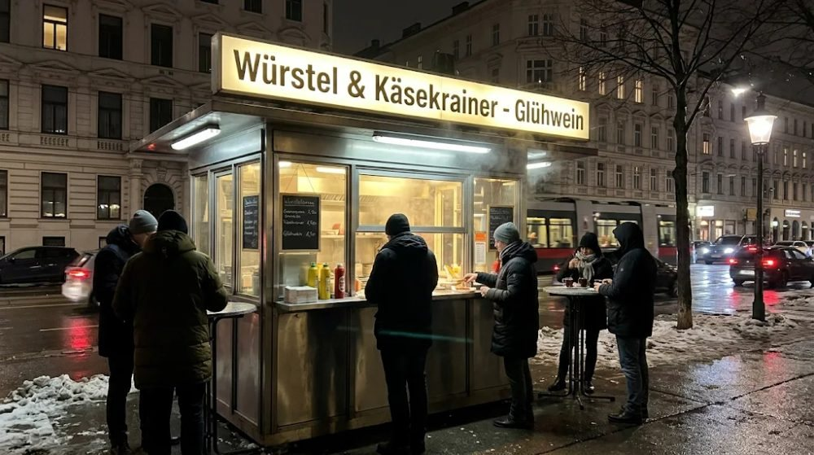

Pfeiltasten blättern, die Taste A löst auf. Die Auflösung erscheint erst, wenn du tippst. Für den Ablauf im Türchen (erst am Ende auflösen) blätterst du einfach weiter und deckst im Überblick auf.
Sechs Bilder sind echte Fotos, sechs hat Gemini generiert.